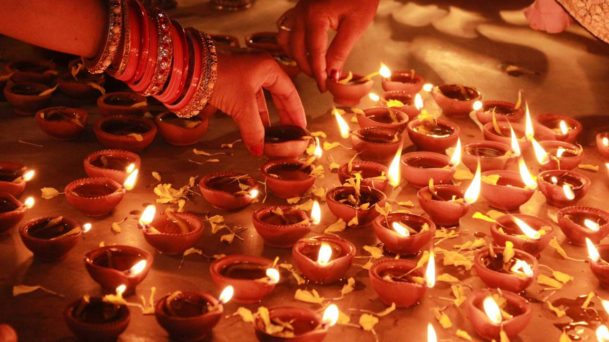

2. Diwali: The festival of lights
Diwali, also referred to as the Festival of Lights occurs throughout India during October or November. It’s a five-day Hindu festival that honours light’s triumph over darkness and good versus evil.
The millions of clay lamps and candles that bejewel houses, shops, and streets produce the lights. In the night sky, fireworks make a display of light. Family get-togethers, prayers, feasting, and lighting crackers all happen. Cleaning homes is done right from top to bottom, and rangoli sand patterns are decorated with coloured. In this festive period, new clothes are put on while exchanging sweets as presents.
Due to its magical lighting, India’s cities become fairylands of light. Delhi, Varanasi, and Amritsar have particularly impressive Diwali festivities. For a traveller, seeing Diwali lights is an unforgettable moment.